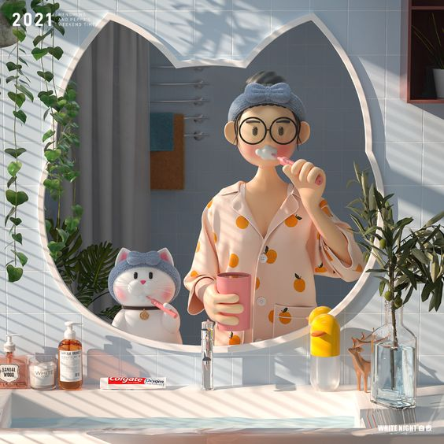
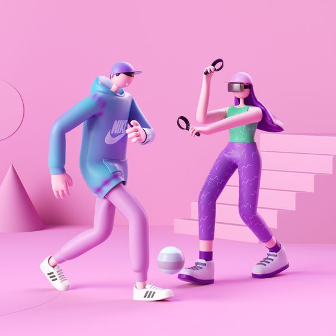
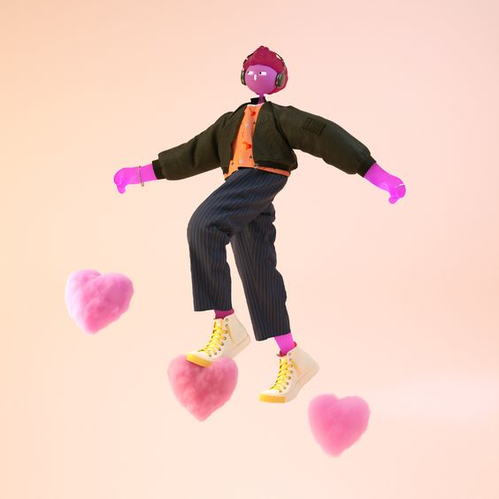
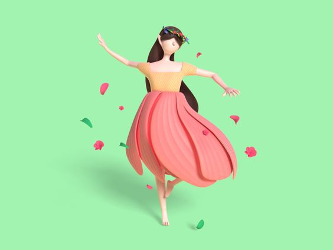
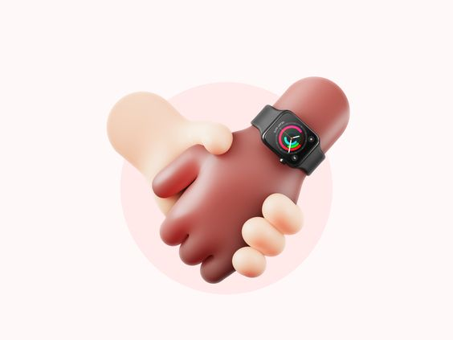
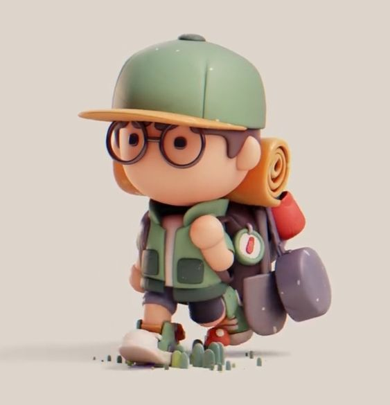
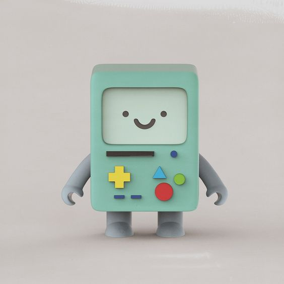

Porque me aceptas tal y como soy, y te muestras tal y como eres.

A veces me cuesta hasta aceptarme a mi mismo, y el que tú me quieras tal y como soy es muy importante
para mí, me hace sentir que soy especial para ti, que realmente me quieres y que pertenezco a algún
lugar, que es a tu lado.
Además tú eres sincera conmigo, te muestras tal y como eres, me abriste tu corazón, me permitiste
entrar. Yo quiero decirte que te prometo siempre cuidar y mantener la confianza que hasta ahora me has
brindado.
Por como nos complementamos.

En nuestro humor, en nuestros pensamientos, en que sabemos perfectamente quién siempre tiene la razón,
verdad?...
Esa es la razón de que nuestras pláticas nunca se teminen y puedan seguir por un laaargo tiempo. No hay
nada mejor que platicar contigo, por dónde sea, el hecho de estar ahí, es algo que amo.
Porque siempre me encanta escucharte decir que me quieres.

Y es que tu voz suena distinto a las demás, así que desde ese momento puedo darle un mayor significado a
lo que me estás diciendo.
Como bien lo dijiste en algún momento,
Porque eres especial para mi.

Es la mejor manera en la que puedo resumir lo que eres para mí y es que te has vuelto alguien súper
importante en mi vida; así que quisiera decirte lo siguiente... es obvio que esto nos va a costar, nos
vamos a desvelar, vamos a hablar, nos vamos a hartar e incluso en algún momento pensemos en desertar..
una vez que se termine nuestra etapa de enamorados y comencemos a ver los defectos en el otro, podemos
decir que nos queremos realmente. y es que construir un futuro juntos requiere más que amor, hacen falta
ganas, responsabilidad, compromiso y un plan, pero estoy seguro que valdrá cada segundo, porque una vida
a tu lado, será un hogar.
Porque te extraño cuándo te vas.

Paso momentos tan increiblemente especiales a tu lado que cuándo no estoy hablando o me encuentro
físicamente contigo, me parece difícil no extrañarte, ni pensar en tí.
Creo que puedo decir que he aprendido a darles un valor mucho más especial a los momentos que comparto
con las personas y es por ello que disfruto cada segundo que paso contigo, me dan ganas de contarte todo
lo que me pasó en los días que no te ví y de escuchar cada cosa que tienes por platicarme. Mi cara podrá
verse normal. pero mi corazón agitado no puede esconder lo nervioso y feliz que estoy por verte. Pero
cuándo no estoy contigo, respiro diferente, el tiempo pasa lento y todo es tan normal.
Porque sacas lo mejor de mí y a tu lado me siento capaz de todo.

Y es que cuando no hay nada que odie más que pelear contigo, me hace sentir débil, no pienso en nada más
que eso, no me dan ganas de hacer nada en mi día a pesar de que tenga miles de cosas que hacer, porque
si hay algo que me preocupa más que todo lo que tengo ahora mismo en mi vida, es que nosotros estemos
bien, nos sintamos cómodos siendo una pareja.
Porque cuando es así, cuándo sé que todo está bien, siento que puedo hacerlo todo... y cuándo siento tu
apoyo en lo que quiero hacer es lo mejor del mundo, si yo no tengo confianza en mí, tú eres la que me la
das y por tí estoy seguro que puedo hacer lo que sea.
Porque me aportas paz y felicidad.

Creo que si me ves caminando por la calle, hablando por teléfono o haciendo cualquiera de mis actividades
diarias te podrían asegurar (Digo que te podrán asegurar, porque nunca me va a pasar cuándo esté junto a
tí) que seguramente soy un mamón y mi vida es de las más aburridas. Y puede que tengan razón en algo,
por algo me estarán viendo desde lejos jaja
Pero cuándo estoy junto a tí, siempre me duele mi cara de tantas emociones que encuentro y de tan feliz
que spy, no se me borra la sonrisa. Mi madre me ha empezado a decir que solo en mi mundo soy feliz... y
bueno, ya sabemos quién es mi mundo.
Porque me haces olvidar los problemas del día a día.
Como ya lo dejamos claro mi cara cuándo no estoy contigo denota que no quiero que nadie se me acerque, a
veces se me nota más porque puede que tenga algunos problemas detrás. Pero no hay nada mejor que hablar
contigo para que todo pase y es que me das energía, me das ganas y puedo decir que me das un motivo más
grande que lo que estoy pasando en ese momento.
Contigo puedo hablar sin sentirme juzgado, puedo hablarte y de verdad siento la atención que me pones,
me siento escuchado y eso me encanta.